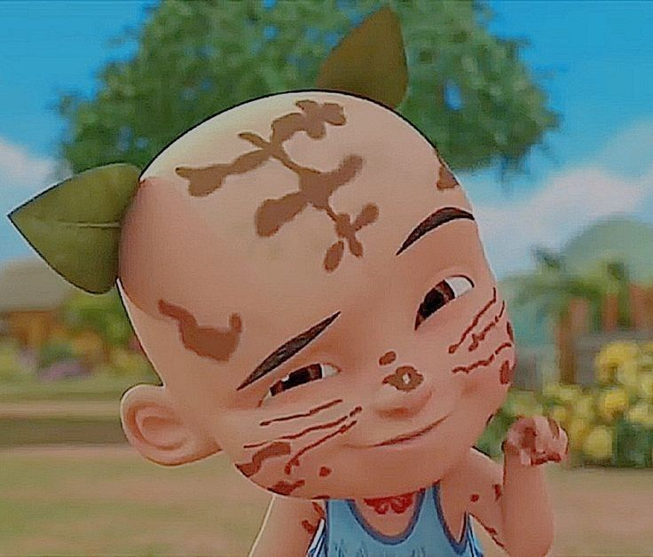

Ipin (nama lengkap: Ariffin bin Abdul Salam). anak kembar bersaudara yang tinggal di sebuah rumah di Kampung Durian Runtuh bersama dengan kakaknya, Kak Ros, dan neneknya, Opah. Mereka sudah menjadi anak yatim piatu, sebab kedua orang tuanya, yaitu ibu dan ayahnya, sudah meninggal saat mereka masih bayi. Kuburan kedua orang tua mereka ditunjukkan dalam sebuah episode berjudul Hari Raya dan Istimewa Hari Ibu. Ipin lebih imut dan lucu daripada Upin dan gemar makan ayam goreng. Ipin juga cenderung sering mengulang satu kata menjadi tiga kali dalam satu kalimat, khususnya "betul, betul, betul!". Upin dan ipin selalu bersikap manja pada Opah, dan suka menggoda Kak Ros. Upin dan Ipin bersekolah di Tadika Mesra (TK Kasih Sayang). Ipin tidak memiliki rambut, juga memakai tanktop berwarna biru yang tertulis huruf I, dan selalu pakai kain merah di lehernya.